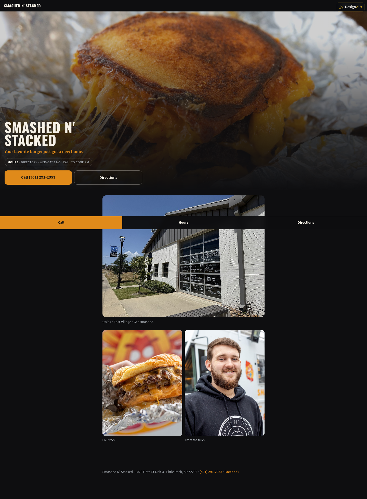
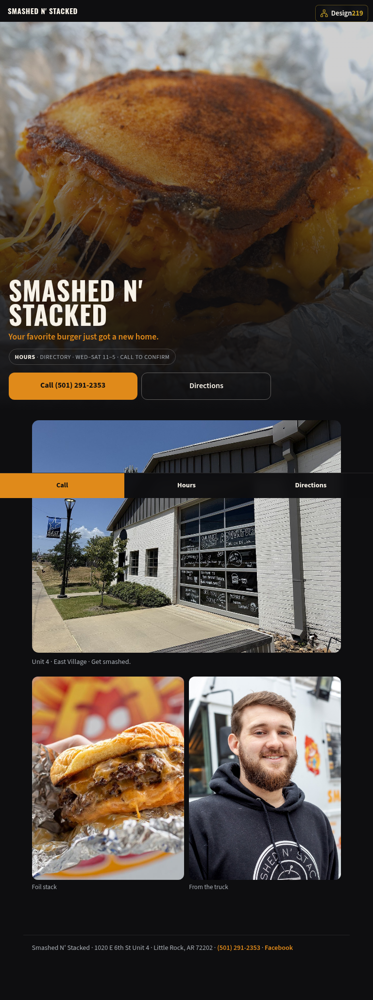
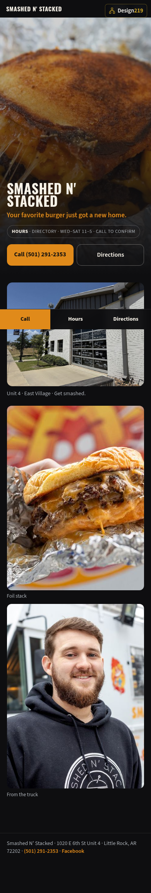

A website for Smashed N' Stacked,
already built.
Not a proposal and not a slide mock. The site is finished and working. This packet shows what it looks like on every screen, what it does, how people find it, how it sits with your Facebook, and where it could go. Nothing owed. Nothing signed.
ATTN: James Mann · For the owner
James,
Your cheese-pull smash and the East Village Unit 4 door already do the talking online — Facebook and the press carry the plates. What someone searching “smash burger Little Rock” still does not get is a quiet address that is yours: name, Unit 4 street, Call, and today’s hours on the first screen of a phone.
I built a finished look on my own time from your public photos so you can open it cold. If you want it on a domain you own, we put it there. If not, you have lost nothing.
01 · The front page
Your foil stack, your name, your street.
The first screen is food-led: the cheese-pull smash in foil, the line Your favorite burger just got a new home, hours marked DIRECTORY until you lock them, Call to (501) 291-2353, and Directions into Maps for 1020 E 6th St Unit 4. No digging for the number.

02 · Every screen
Computer, tablet, phone.
Hours, address, and Call sit on the first screen before a long scroll. On a phone, a sticky bar keeps Call · Hours · Directions under the thumb.


03 · The working parts
What already works.
04 · Being found
What search engines see.
Page titles, share cards, real headings, and alt text on your food and door. Machine-readable name, address, and phone are ready when you publish. Results build over weeks; a claimed Google Business Profile still matters. Nobody honest promises the top spot — this just stops sending searchers into a dead end.
05 · Site and social together
Facebook is the conversation. The site is the address.
You already run facebook.com/smashednstacked for specials and the room. That page is rented. The site would be an address you own: searchers who have never opened your Facebook still land on Call and Unit 4. Posts can point home; if a page locks or breaks, the facts stay put.
06 · The whole site
Two pages, top to bottom.
Home (foil hero, chalk door, stack + truck) and Visit (Unit 4 note, DIRECTORY hours board, map). The live phone link is easier than these crops — scan the code.


Open the unpublished site
https://design219llc.github.io/outreach-looks/smashed-n-stacked/
Deep link only. Not the hub. Not a GitHub repo page.
07 · What it opens up
The door this puts in the wall.
None of this is built yet; none is required for the site to work. Once you own an address, each piece is a small addition from the same bench — not a second vendor chase.
Order matters. Analytics first so the rest is evidence, not a hunch.
08 · What is still needed
Two or three short conversations.
Hours. Wed–Sat 11–5 is labeled DIRECTORY from press on the brick-and-mortar move — not an owner-confirmed permanent board. Confirm or rewrite.
Menu / prices. Not invented here. If you want a menu page, we use what you approve.
Photo rights. Frames are from public press and your Facebook. Say if any plate should come down or be replaced with your phone shots.
Close
Fair price before any work starts.
No number in this packet. No obligation and no invoice behind the look. Think about it — it is not going anywhere. Happy to walk the site in plain words with no pitch.

Sheridan, Arkansas
david@design219.com
(870) 663-3023
https://design219.com
Whatever you run. We build for you.
110 E. Sunset Drive, Sheridan, AR 72150